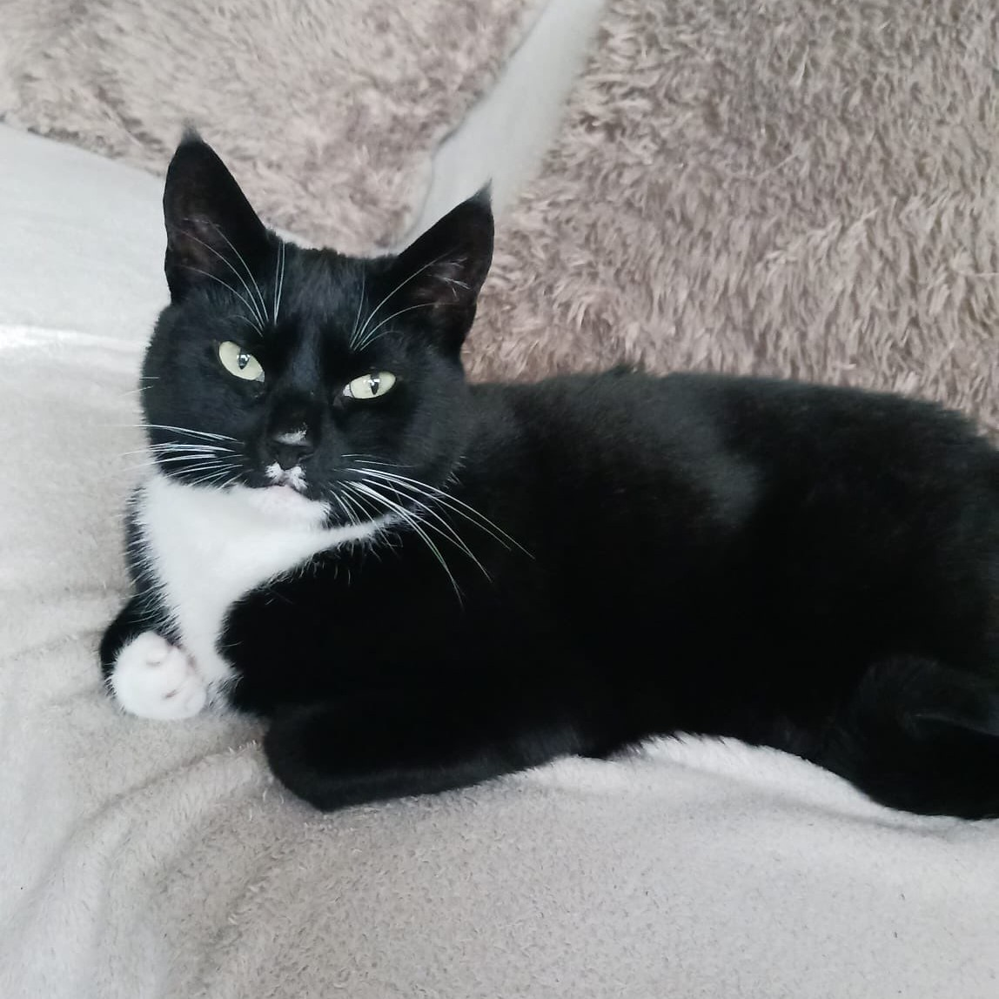

Over deze website
Deze website gaat over mijn katten met een eigen pagina voor elke kat.
Mijn katten
Ik heb drie katten waar ik heel veel van houd. Alle drie de katten zijn vrouwtjes en hun namen zijn: Hannah, Annabelle en Saar. Al onze katten mogen niet naar buiten, omdat de leefsituatie daar niet erg geschikt voor is en het is veiliger om hen binnen te houden.
Hannah
Dit is Hannah, de oudste kat die ik heb. Ze is een rustige kat en vindt het fijn om te knuffelen en aan je te hangen, al is dat niet altijd zo.
Je kan hier meer over Hannah lezen.
Annabelle
Annabelle is een hele lieve tedere kat. Zij wilt heel graag aandacht en zal het ook zeker van jou vragen, maar raakt snel al bang en rent zij weg.
Je kan hier meer over Annabelle lezen.
Saar
Saar, ookwel bekent als Saartje, is onze kitten die wij sinds kort hebben. Zij is nog hard aan het groeien en daar hoort heel veel spelen natuurlijk wel bij.
Je kan hier meer over Saar lezen.